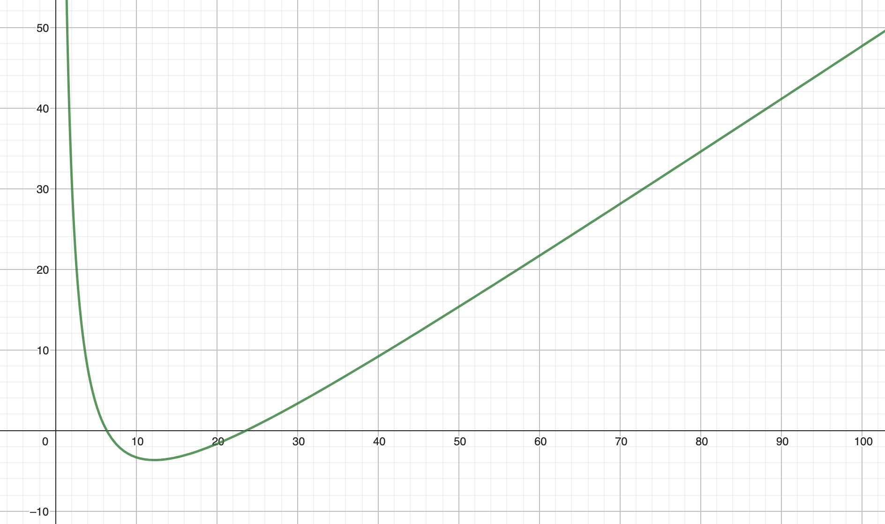

Consignes générales
Toutes les consignes et recommandations vues en cours devront être respectées, notamment :
- du code structuré et correctement indenté,
- du code découpé ; ne pas hésiter à faire plusieurs fonctions (même des petites),
- du code DRY (Dont' Repeat Yourself),
- du code documenté
- du code testé et avec un minimum de robustesse
Eléments de départ fournis quel que soit le projet :
- ce fichier (sujet_xx.html) qui est un conteneur de votre projet
- un fichier de style CSS (style.css) déjà chargé via le header du document html
- un fichier Javascript (tools.js), déjà chargé via le header du document html, contenant divers outils :
- une fonction d'affichage formatté d'un tableau (Array) à la fin du document html courant,
- une fonction d'affichage formatté d'un résultat à la fin du document html courant,
- une fonction de génération aléatoire d'un nombre entier compris entre 2 valeurs,
- une fonction de génération d'une série aléatoire de nombres entiers rangés dans un tableau de type Array,
N'hésitez pas à faire vos curieux sur le code disponible dans le fichier tools.js et à utiliser (c'est à dire appeler) les fonctions
proposées selon votre sujet et/ou vos besoins. Vous pouvez aussi vous en inspirer...
La restitution de votre travail se fera par les moyens de votre choix (zip, dépôt sur votre github, ...) au plus tard
le matin du jour de la soutenance.
Elle devra contenir tous les éléments pour faire tourner votre code : à minima, les fichiers tools.js,
style.css et, bien évidemment, le fichier sujet_xx.html que vous aurez modifié. Ajoutez tout autre fichier que vous jugeriez nécessaire
pour restituer votre travail.
En principe, seul l'ajout de code JavaScript entre les balises <script>...<script>
est nécessaire mais sentez-vous libre de modifier n'importe quelle autre partie des 3 fichiers proposés (.html, .js, .css)
sous réserve d'en avoir une justification.
Bien entendu, durant la semaine précédant la soutenance, je reste disponible pour répondre à toutes les questions
pour lever les doutes, les ambiguïtés, les incompréhensions du sujet, ...
Ne restez pas totalement bloqué au risque de perdre du temps ou, pire, de supputer
et de vous fourvoyer...
Sujet #12 - Quelle belle courbe !
Nous allons très sommairement étudier la fonction mathématique (ne pas confondre avec une fonction
au sens informatique) f qui à x associe :
L'étude se fera pour x ∈ [1, 100].
Il faut proposer une méthode qui permet de ranger dans un tableau les valeurs de f(x) pour x allant de
1 à 100 par pas de 1.
- Ecrire une fonction qui calcule f(x) pour une valeur quelconque de x.
Bien faire attention au(x) paramètre(s), au retour et au nommage de cette fonction.
- Ecrire la fonction principale "compute".
Cette fonction range dans un tableau les valeurs successives calculées à l'aide de la fonction déclarée au point précédent
pour des valeurs de x allant de 1 à 100.
Il faut donc ranger f(1), f(2), ..., f(100) dans ce tableau.
Restituer le résultat à l'utilisateur par le moyen de votre choix (console, zone de résultat, ...), mais
la fonction "displayArray" donnée dans tools.js peut se révéler très utile... vraiment utile.
- Bonus : Si les choses ont été faites avec esthétique (c'est à dire en utilisant la fonction "displayArray"
proposée), on remarque que le tableau est un peu long et compact.
Proposer une solution qui présente les résultats à
l'utilisateur sous forme de plusieurs tableaux ; par exemple un tableau pour x de 1 à 20, puis un autre tableau pour
x de 21 à 40, ... etc.
Toute autre proposition de restitution à l'utilisateur sera appréciée et étudiée avec bienveillance.